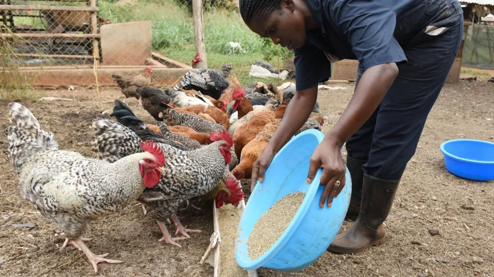
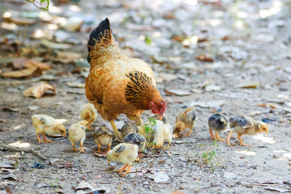
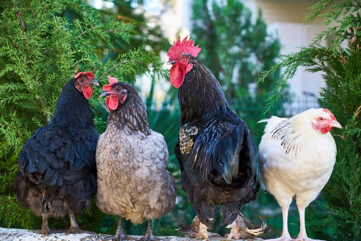

Feeding Chicken

Brooded Chicken

Improved Kienyeji Chicken

Kienyeji Chicken, also referred to as Local chicken is a broad name used for indigenous chicken breeds in Kenya and Uganda, mostly reared in the village under the free-range method. They are also referred to as village chicken or road runners in other regions. Local chicken farming is becoming popular today because the chicken is considered organic and hence the preferred healthier option. Local chicken farming can bring in good returns or lead to great losses.
Is local chicken farming profitable? You may be asking. Local chicken can be profitable if you run your chicken farming enterprise like a business, with a proper chicken business plan. In this article, we look at exactly that. How to make your chicken farming worth your time and money. We will also guide you on developing a business plan that will work for your local chicken farm
Before starting your own local chicken venture, you will need to ask yourself one question. Why? Why go into chicken farming? Why keep local chicken instead of hybrid broilers or layers? There are several reasons why farmers consider keeping local chicken. These are:
Ease of entry: It is very easy to start rearing local chicken. No much initial capital is required, especially if you are doing it as a hobby or trial. Getting one rooster (male chicken) and two hens are enough to start. When the hens start laying, let them sit on eggs. If each hen hatches 10 chicks, and is let to brood them for two months, then lay for another month, you should have at least 60 chicken at the end of one year. Assuming zero mortality and no chicken is disposed of, you should have hundreds of local chicken by the end of the second year.
Hardiness of local chicken: Local chicken are known to be hardy. They have better resistance to disease than hybrid chicken. When it comes to feeding, they can forage for their own feed. Some breeds are known to have the ability to survive on agricultural waste alone. Hybrid chicken have to feed on a well-balanced well-formulated feed ration throughout in order to achieve maximum productivity.
High demand: As people become more health-conscious, there is increased demand for local eggs and meat. They are perceived to be healthier. The growing niches include purely free-range chicken, antibiotic-free chickens, improved local chicken, etc.
Breeding: Breeding indigenous breeds that have good qualities with other indigenous breeds that have good qualities. There are five common improved local breeds in East Africa. They include Kari (from Kenya), Rainbow rooster, Kuroiler, Kenbro and Sasso.
Farming methods: Traditionally, local chicken have been kept under the extensive system, where they are let free to scavenge for their own feed. Once in a while, the feed is supplemented by giving the chicken grains. With this method, there is minimal medication and access to veterinary officers. The chicken are housed on temporary structures and in some cases spend the night with other livestock or in the room that is not used by the farmer’s family at night, for example, the kitchen. There is no protection from predators. With this traditional system, the flock never gets to grow big, where the farmer can benefit from economies of scale. There is no flock management, but the farmer sells chicken when he needs to. Though the costs are very minimal in this system, there is no way to measure profitability. A solution to these issues is to keep the local chicken, using modern poultry farming methods, while reaping the benefits of the traditional system.
Free-range system: Under the free-range system, the chicken are left to roam around the farm and scavenge for their own food. There is minimal or no supplementation when it comes to feeds. The chicken are housed at night to protect them from predators and adverse weather. There are some modifications of this method of poultry farming, namely the pastured system and the yarding system.
Semi-intensive system: Under the semi-intensive system, the chicken are kept in a fenced run, where they can roam around. The run is attached to the house where they sleep at night. Food and water are provided by the farmer.
Pastured Poultry System: Under the pastured poultry system the chicken are kept in temporary fenced paddocks or kept in chicken tractors and moved to a new paddock every few days. They spend the night in the chicken tractors or movable coops inside the paddocks. This is a modification of the free-range system, where the chicken can scavenge for their own feed but are provided with water and security. The paddocks are fenced using movable fences, sometimes powered by electricity so as to keep predators away and the chicken inside. Supplemental feed is given to the chicken to meet their nutrient quota. The chicken eat insects, grass and other vegetation in the paddock. Moving the chicken allows the vegetation on the paddock to regenerate and grow again. In some cases, the chicken follow the herbivores that have been feeding on the paddock. When the herbivores move to the next paddock, the chicken are moved to the paddock where the herbivores were. This allows the chicken to benefit from the bugs in the animal droppings. The land also benefits as the chicken spread the animal droppings when they are scratching.
Housing for local chicken: In order to make a profit from your local chicken business, you will need to offer them good housing. When your chicken is comfortable, they will be more productive. The house should keep the chicken safe from predators. It must be free from environmental extremes such as strong wind, cold and heat.
| Age in Weeks: | 1-6 | 7-8 | 9-15 | 16-18 | 19-22 |
|---|---|---|---|---|---|
| No. of Grams per per day: | 12-41 | 45-49 | 52-92 | 97-110 | 120-140 |
| Type of Feed: | Chick Mash | Gradual Change to Growers Mash | Growers Mash | Gradual Change to Layers Mash | Layers Mash |
A lot of research has gone into chicken nutrition, with great recommendations on nutrients for optimal performance. One of the reasons local chicken farmers do not make a considerable profit is they leave feeding of their chickens to fate, feeding them whatever is available at any given time. Think of chickens like human beings, who need different nutrients at different ages. Lack of these nutrients, at a specific age, will lead to low immunity, stunted growth, and impaired development. This is the same for chicken.
Starter: Starter chicken feed is meant for baby chickens. They are packed with nutrients needed for the development of chicks. Starter feeds have a high level of protein. If you are raising local chicken for meat, you should give the starter required for meat birds, and similarly, if you are raising them for eggs, you should give then the starter feed for laying birds. with 1 day chicks they will feed on chick mash and starter crumbs (rich in proteins) till at the age of 8-10 weeks whereby they will be gradual introduction of grower mash. An average of 40-60 grams/day per chick will take approximately.
Grower pullet: Grower pullet chicken feeds are meant for chicken that is being kept for laying eggs. They have 18 per cent protein content. The lower protein content is meant for the birds to develop stronger bones, and get to the right laying weight gradually. Too much protein will make the birds lay too early before the productive systems are well developed. This will lead to several health issues and will have a negative effect. Grower pullet feed is fed to chickens until 14 weeks. Grower pullet finisher is meant to transition the laying chicken from grower pullet to layers mash. This is given to the chicken from 14 weeks to 18 weeks when they start laying. Grower pullet finisher contains 16 per cent protein. At Grower stage one chick can feed on 70-90 grams/day.
Layers mash: At about 28 weeks of age, the chicken being raised for eggs are ready for laying. At this age, they are transitioned to layers mash, which contains 16 per cent to 18 per cent protein and extra calcium that is needed for strong eggshells. From week 18 they will be on layer mash whereby some first one will start laying eggs and the consumption of the feeds will be high making one chicken to feed on 100-140 grams/day.